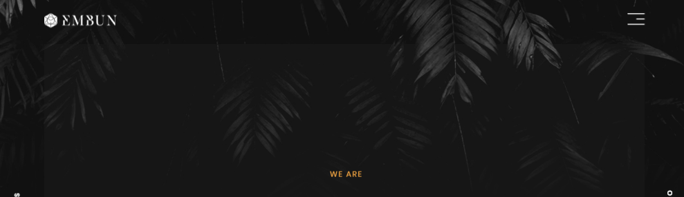

Introduction
Live PreviewThank you for purchasing Embun template. This documentation will give you an overview of the template and help you to know how to customize it to your requirements.
Requirements
Text Editor
To modify Embun you should have a text editor. You can use any editor (e.g. Atom, Sublime Text, etc.).
FTP Client
To publish your website you will need transfer files to remote server of your hosting. It's very important to understand that you must either have your own server space or use someone else's. The server space can be purchased at many different places around the Internet. You need somewhere to put the files that you purchased so others can find them online.
To transfer your files to server you can use different FTP clients (e.g. FileZilla). How to upload files to server with FileZilla you can read here. You should upload the contents of an archive to root directory.
HTML & Site Structure
The layout in Embun is flexible and well commented, The general template structure is the same throughout the template. Here is the general structure :
Home Agency
<section class="home-container">
<!-- Left / Right BIG Hover -->
<div class="left-anim"></div>
<div class="right-anim"></div>
<!-- Background -->
<div class="outer-page">
</div>
<!-- logo -->
<div class="logo animated fadeInDown">
</div>
<!-- logo mobile -->
<div class="m-logo animated fadeInDown">
</div>
<!-- mobile navbar -->
<a class="m-navbar-left animated fadeInDown" href="about.html">
</a>
<a class="m-navbar-right animated fadeInDown" href="work.html">
</a>
<!-- Title -->
<div class="title animated fadeInUp">
</div>
<!-- Typed Text Animation -->
<div class="table">
</div>
<!-- Button -->
<a href="about.html" class="nav-lr nav-left">
</a>
<a href="work.html" class="nav-lr nav-right">
</a>
<!-- Social Medoa -->
<div class="social animated fadeInUp">
</div>
<!-- Copyright -->
<div class="copyright animated fadeInUp">
</div>
</section>
<!-- Menu Toggle -->
<div class="button_container animated fadeInDown" id="toggle">
</div>
<!-- Custom-cursor -->
<div class="cursor-dot-outline"></div>
<div class="cursor-dot"></div>
Home Personal
<section class="home-container">
<!-- Left / Right BIG Hover -->
<div class="left-anim"></div>
<div class="right-anim"></div>
<!-- Background -->
<div class="outer-page personal">
</div>
<!-- logo -->
<div class="logo animated fadeInDown">
</div>
<!-- logo mobile -->
<div class="m-logo animated fadeInDown">
</div>
<!-- mobile navbar -->
<a class="m-navbar-left animated fadeInDown" href="about.html">
</a>
<a class="m-navbar-right animated fadeInDown" href="work.html">
</a>
<!-- Title -->
<div class="title animated fadeInUp">
</div>
<!-- Typed Text Animation -->
<div class="table">
</div>
<!-- Social Media -->
<div class="social animated fadeInUp">
</div>
<!-- Copyright -->
<div class="copyright animated fadeInUp">
</div>
</section>
<!-- Menu Toggle -->
<div class="button_container animated fadeInDown" id="toggle">
</div>
<!-- Custom-cursor -->
<div class="cursor-dot-outline"></div>
<div class="cursor-dot"></div>
About
<!-- main-background -->
<div class="main-detail-bg">
<!-- mouse animation -->
<a href="#">
</a>
</div>
<!-- Title-->
<div class="table">
<div class="valign">
<div class="container">
<div class="row">
<!-- title -->
<div class="col-md-12">
<div class="title-about" data-aos-once="true" data-aos="fade-up" data-aos-delay="200">
<h2>WE’RE AN <span>INDEPENDENT</span> DIGITAL AGENCY WITH A TEAM OF DESIGNERS & CREATIVE DEVELOPERS WHO <span> LOVE </span>IN CRAFTING DIGITAL EXPERIENCES</h2>
<div class="dash"></div>
</div>
</div>
</div>
</div>
</div>
</div>
<!-- Content -->
<div class="bg-white mt-full">
</div>
<!-- Client -->
<div class="bg-main">
</div>
<!-- Address -->
<div class="footer">
</div>
Work
<!-- Side Navbar -->
<nav class="work-nav">
<div class="table">
<div class="valign">
<a class="item-menu active" data-menuanchor="firstPage" href="#firstPage">
<span class="text">Nat-nat</span></a>
<a class="item-menu" data-menuanchor="secondPage" href="#secondPage">
<span class="text">Genesis</span>
</a>
<a class="item-menu" data-menuanchor="thirdPage" href="#thirdPage">
<span class="text">Angsa</span>
</a>
<a class="item-menu" data-menuanchor="fourthPage" href="#fourthPage">
<span class="text">Marmoset</span>
</a>
<a class="item-menu" data-menuanchor="fifthPage" href="#fifthPage">
<span class="text">Senja</span>
</a>
<a class="item-menu" data-menuanchor="sixthPage" href="#sixthPage">
<span class="text">Nellax</span>
</a>
</div>
</div>
</nav>
<!-- Work List -->
<div class="pagepiling">
<!-- Work 01 -->
<div class="section work-1">
<div class="layer">
<!-- background -->
<div class="prx bg-work-1" id="--1">
<!-- Work Image -->
<div class="img-obj-1" data-depth="0.20"></div>
</div>
</div>
<div class="container">
<div class="row">
<div class="col-md-8">
<div class="title-work animated fadeInUp delay-0.5s">
<a href="work-detail.html">
<h3 id="zoom-fade">Nat-nat</h3>
<p class="sub">Web Development, Branding, UI, UX Desgn</p>
<h4 class="btn-detail">Work detail</h4></a>
</div>
</div>
</div>
</div>
</div>
Work detail
<!-- Title -->
<div class="table">
<div class="valign">
<div class="container">
<div class="row">
<div class="col-md-6">
<div class="title-work-detail">
<h2>Nat-nat</h2>
<p class="project">Website Development, UI UX, Branding, Responsive Site, Mobile App & System Development</p>
<div class="dash"></div>
<p>Nat-nat is a simulated mission made of 8 motion graphic interstitials and 7 WebGL games, each testing the user on a range of STEM skills that are required for the U.S. Army’s most unique career opportunities.</p>
</div>
</div>
</div>
</div>
</div>
</div>
<!-- Content -->
<div class="bg-main mt-full">
<div class="container">
<div class="row">
<div class="col-md-8 offset-md-2 text-center">
<div class="web-detail">
<h3>Websites</h3>
<p class="m-each" data-aos-once="true" data-aos="fade-up">Nat-nat website was also developed by us. We focused on improving and optimizing the navigation, making it more intuitive and functional, highlighting videos and attractive images of the complex, creating a differentiated and pleasant experience.</p>
<div class="image-work" data-aos-once="true" data-aos="fade-up">
<img class="img-fluid" src="img/work-detail/1.png" alt="3">
</div>
<div class="m-each" data-aos-once="true" data-aos="fade-up">
<a href="#" class="btn-link">launch Website</a>
</div>
<div data-aos-once="true" data-aos="fade-up">
<img class="img-fluid" src="img/work-detail/2.jpg" alt="2">
</div>
<p class="m-each">Nat-nat website was also developed by us. We focused on improving and optimizing the navigation, making it more intuitive and functional, highlighting videos and attractive images of the complex, creating a differentiated and pleasant experience.</p>
<div class="image-work" data-aos-once="true" data-aos="fade-up">
<img class="img-fluid" src="img/work-detail/3.jpg" alt="2">
</div>
<div class="image-work" data-aos-once="true" data-aos="fade-up">
<img class="img-fluid" src="img/work-detail/4.jpg" alt="2">
</div>
</div>
<!-- Navigation Bottom -->
<ul class="prev-nex-btn">
<li><a href="work-detail.html">Previous Project</a></li>
<li><a href="work-detail.html">Next Project</a></li>
</ul>
</div>
</div>
</div>
</div>
How to change
Logo
First go to /css/style.css directory
.logo {
position: fixed;
top: 4%;
width: 150px;
height: 30px;
background: url('../img/logo.png'); //here
left: 100px;
z-index: 99;
letter-spacing: 26px;
}
.logo a {
color: transparent;
}
.logo.\-active {
background: url('../img/logo-active.png') !important; //here
}
Then feel free to change it
Background
First go to /css/style.css directory
.outer-page {
background-image: url('../img/home-bg-layer.jpg'); //for agency page(back)
background-repeat: no-repeat;
background-origin: border-box;
background-attachment: fixed;
position: absolute;
width: 100%;
height: 100%;
top: 0;
left: 0;
padding: 100px;
background-color: #111111;
}
.outer-page.\personal{
background-image: url('../img/homr-bg-personal.jpg') !important; //for personal page
background-size: cover;
background-position: 60% bottom;
}
.inner-page {
z-index: 2;
display: block;
height: 100%;
width: 100%;
position: relative;
overflow: hidden;
background-color: #161616;
background-image: url('../img/home-bg.jpg'); //for agency page(front)
background-repeat: no-repeat;
}
Then feel free to change it
Image on work page

First go to /css/style.css directory
.bg-work-1 {
position: relative;
height: 100%;
width: 100%;
background: url('../img/works/1.jpg'); //for background
background-attachment: fixed;
background-size: cover;
background-repeat: no-repeat;
background-position: center bottom;
}
.img-obj-1{
width: 50%;
height: 50%;
left: 40% !important;
top: 30% !important;
background-position: center center;
background: url('../img/works/obj-1.png'); //for object
background-size: contain;
background-repeat: no-repeat;
background-position: center center;
}
Then feel free to change it
CSS
All CSS files located in /css directory. Template has 3 css files:
- plugin.css
- animate.min.css
- bootstrap.min.css
- aos.css
- jquery.pagepilling.min.css
- loader.css
- all.css
- style.css
- responsive.css
all.css
Get vector icons and social logos on your website with Font Awesome, the web’s most popular icon set and toolkit. See more at fontawesome.com
aos.css
Animate On Scroll Library See more at https://michalsnik.github.io/aos/
bootstrap.min.css
File with styles of Boostrap 4 Framework. It contains only grid system, other Boostrap styles not included. See more at getbootstrap.com.
jquery.pagepilling.min.css
Create an original scrolling site. See more at alvarotrigo/pagePiling.
style.css
This is a main CSS file with 5 different sections:
- Common Style
- Home
- Work
- Work detail
- About
responsive.css
Section with responsive layout has different media quires. All media queries arranged in order of decay. If you want to add your media query, add it so as not to upset the order. To add you media query use the syntax:
@media (max-width: Npx) {
/* Your Code Here */
}Where N means number of pixels of screen.
Javascript
All javascript files located in /js directory. Template require 7 javascript plugins:
- jquery-3.3.1.min.js
- plugin.js
- plugin-work.js
- parallax.js
- pagepilling.js
Also template require main javascript file with user's functions called custom.js and work.js .
jquery-3.3.1.min.js
jQuery library. See more at jquery.com.
jquery.pagepilling.min.js
Create an original scrolling site. See more at alvarotrigo/pagePiling.
parallax.min.js
Background plugin. See more at http://matthew.wagerfield.com/parallax/.
custom.js
This is a user's javascript file with main function like different calling plugins and some own scripts. File has 8 sections:
- Preloader
- Navbar
- Custom Cursor
work.js
This is a user's javascript file with main function like different calling plugins and some own scripts. File has 8 sections:
- Preloader
- Navbar
- Page Slide Work
- Parallax setup
- Custom Cursor
Credits
All images and icon come from :
Once again, thank you so much for purchasing this theme. As I said at the beginning, I'd be glad to help you if you have any questions relating to this theme. No guarantees, but I'll do my best to assist. If you have a more general question relating to the themes on ThemeForest, you might consider visiting the forums and asking your question in the "Item Discussion" section.